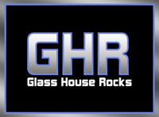

Sabor Latino Dance Troupe


Gallery
 |
Sabor Inferno 2010Sabor Inferno was our divine comedy. We navigated through the heights of heaven and plunged into the flames of hell in our adaptation of Dante's divine comedy. Browse through our promotional materials and check out our depiction of virtues and vices. |
 |
Releve 2010This year's releve program featured students with an unlimited amount of talent They participated in theather, dance and even vocal workshops and at the end shared their talents in a showcase attended by over a hundred guest. |
|  | Glass House Rocks 2010Amidst lights and crowds sabor performed at one of the hottest events of the year. Glass House Rocks brought down the house with a futuristic vision. In short Sabor Rocked the House. |
 |
Sabor ClasicoSabor's fifth annual show was filled with a wide variety of styles. From Brazil's zamba to India's Bhangara, the show was a parade of diversity. |
Perspectives on Diversity 2009The incoming class of 2014 was greeted with a wide array of performances. Sabor, of course, could not miss this opportunity. As ambassadors to Latino culture we celebrated cultural diversity and welcomed the mixed flavored incoming class. |
|
|
Releve 2009In Merengue and Bachata, the Releve students of 2009 made the hearts of members and guests tremble. Though most of the students were new to the country, language was not a barrier for a team that speaks the language of art. |
Glass House Rocks 2009"Pop...squish..cicero", Glass House 2009 was a theatrical performance where dance met drama. It was also a spicier rendering of chicago. |
|
 |
Sabor Reality 2008Attendants traveled through a worm hole and entered a different dimension in this show. From dancing aliens to robotic hosts, sabor reality managed intergalactic traveled with feet firmly on earth. |
Perspectives on Diversity 2008This performance inspired over sixty students to participate in Sabor Auditions. In a display of Latin American culture, this show presented a fusion of genres that sought to establish sabor as a non-definable entity. |
|
Glass House Rocks 2008"Recordar es vivir." Glass House 2008 played a major role in establishing Sabor as an ambassador of flavor. |
|
 |
Cirque Du Sabor 2007Sabor's own circus, this show took place in 2007. It was Sabor's 3rd show and it featuted some impressive acts worthy of a true circus. |
 |
Sabor Invincible 2006Sabor Invincible sought to demonstrate the power of unity in a team. This show included a wide array of costumes that made this show unique. |
 |
Sabor's 31 Flavors 2005Sabor has been known for its abrasiveness of styles and personalities. This show was a celebration of the differences that make sabor a mixtures of flavors. |


Copyright @ 2010 Sabor at Columbia University